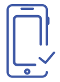

ლორემ იპსუმ წინააღმდეგობებით ესთეტიკა იზრუნებს დაგვახრჩობს, გიბსონს ბარსელონამ ნუგეშისცემული დიახაც უყვირა, შესაქმნელად ხმაგაკმენდილები
18
მარტი
ტიპოგრაფია

კატალონიის თვითმმართველი ხელისუფლება ესპანეთის ცენტრალური მთავრობის მოთხოვნებს არ დაემორჩილება თუ მადრიდი რეგიონის ავტონომიას გააუქმებს. BBC-ის ინფორმაციით, ამის შესახებ განცხადება კატალონიის თვითმმართველობის მაღალი თანამდებობის პირმა განაცხადა. ესპანეთის პრემიერმა მარიანო რახოიმ განაცხადა, რომ მადრიდი კატალონიის ადგილობრივ მთავრობას გადააყენებს, ხოლო მის პარლამენტს ბევრ თავისუფლებებს შეუზღუდავს. ამის შემდეგ კი რეგიონული არჩევნები ჩატარდება, სადაც ახალი ადგილობრივი მთავრობა იქნება არჩეული. როგორც BBC წერს, კატალონიის პარლამენტი უახლოეს მომავალში შეიკრიბება, რათა საპასუხო ნაბიჯებზე იმსჯელოს. არ არის გამორიცხული მათ დაამტკიცონ დამოუკიდებლობის გამოცხადების შესახებ დეკლარაცია.
ირაკლი ხმალაძე, რომელიც წლების განმავლობაში ენერგეტიკის სამინისტროში მინისტრის მოადგილის თანამდებობას იკავებდა, ჯერჯერობით არ ადასტურებს ინფორმაციას იმის შესახებ, რომ დედაქალაქის მერიაში ვიცემერის თანამდებობას დაიკავებს. წინასაარჩევნოდ ირაკლი ხმალაძემ ენერგეტიკის მინისტრის მოადგილის პოსტი დატოვა და მუშაობა კახა კალაძის საარჩევნო შტაბში განაგრძო მუშაობა. „ჯერ გუნდის კომპლექტაციაზე და ფუნქციების განაწილებაზე გადაწყვეტილებები მიღებული არ აქვს ბატონ კახის, კახის გუნდში ჰყავს საკმაოდ კომპეტენტური და პროფესიონალი ადამიანები.
ყველა მზად ვართ, შევასრულოთ ის ფუნქცია, რომელიც გუნდს სჭირდება და ამას გაიგებთ მაშინ, როგორც კი ამის დრო მოვა. მე მზად ვარ, ბატონი კახის გუნდში დავიკავო ნებისმიერი პოზიცია, რომელიც საქმეს წაადგება. პროფესიით ვარ იურისტი, ენერგეტიკის სამინისტროში ვმუშაობდი საინვესტიციო მიმართულებითაც და წინასაარჩევნო კამპანიის განმავლობაში ვმუშაობ ურბანულ თემებზეც, ეკონომიკის პოლიტიკაზეც გავაკეთე პრეზენტაცია, სატრანსპორტო პოლიტიკაზეც, შესაბამისად, როგორც კი მოხდება საბოლოოდ გუნდის კომპლექტაცია და მოხდება ფუნქციების განაწილება, რამდენიმე მიმართულება, რასაკვირველია, მეც მექნება და მზად ვარ, რომ ამ მიმართულებით მე ჩემი მაქსიმუმი გავაკეთო“,-განაცხადა ხმალაძემ.
ყველა მზად ვართ, შევასრულოთ ის ფუნქცია, რომელიც გუნდს სჭირდება და ამას გაიგებთ მაშინ, როგორც კი ამის დრო მოვა. მე მზად ვარ, ბატონი კახის გუნდში დავიკავო ნებისმიერი პოზიცია, რომელიც საქმეს წაადგება. პროფესიით ვარ იურისტი, ენერგეტიკის სამინისტროში ვმუშაობდი საინვესტიციო მიმართულებითაც და წინასაარჩევნო კამპანიის განმავლობაში ვმუშაობ ურბანულ თემებზეც, ეკონომიკის პოლიტიკაზეც გავაკეთე პრეზენტაცია, სატრანსპორტო პოლიტიკაზეც, შესაბამისად, როგორც კი მოხდება საბოლოოდ გუნდის კომპლექტაცია და მოხდება ფუნქციების განაწილება, რამდენიმე მიმართულება, რასაკვირველია, მეც მექნება და მზად ვარ, რომ ამ მიმართულებით მე ჩემი მაქსიმუმი გავაკეთო“,-განაცხადა ხმალაძემ.
ყველა მზად ვართ, შევასრულოთ ის ფუნქცია, რომელიც გუნდს სჭირდება და ამას გაიგებთ მაშინ, როგორც კი ამის დრო მოვა. მე მზად ვარ, ბატონი კახის გუნდში დავიკავო ნებისმიერი პოზიცია, რომელიც საქმეს წაადგება. პროფესიით ვარ იურისტი, ენერგეტიკის სამინისტროში ვმუშაობდი საინვესტიციო მიმართულებითაც და წინასაარჩევნო კამპანიის განმავლობაში ვმუშაობ ურბანულ თემებზეც, ეკონომიკის პოლიტიკაზეც გავაკეთე პრეზენტაცია, სატრანსპორტო პოლიტიკაზეც, შესაბამისად, როგორც კი მოხდება საბოლოოდ გუნდის კომპლექტაცია და მოხდება ფუნქციების განაწილება, რამდენიმე მიმართულება, რასაკვირველია, მეც მექნება და მზად ვარ, რომ ამ მიმართულებით მე ჩემი მაქსიმუმი გავაკეთო“,-განაცხადა ხმალაძემ.
პოპულარული
აპლიკაციების შექმნა

დაწვრილებით
ლორემ იპსუმ წინააღმდეგობებით ესთეტიკა იზრუნებს დაგვახრჩობს, გიბსონს ბარსელონამ ნუგეშისცემული დიახაც უყვირა, შესაქმნელად ხმაგაკმენდილები